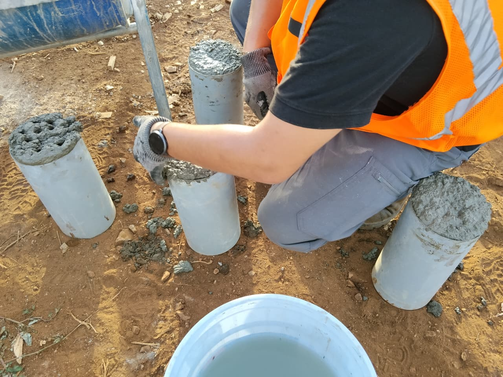
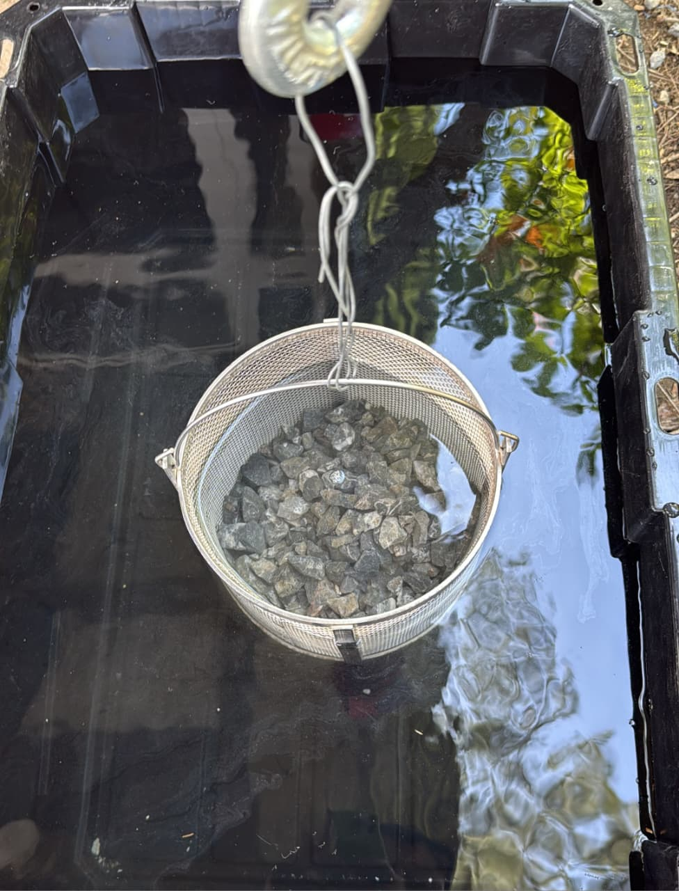
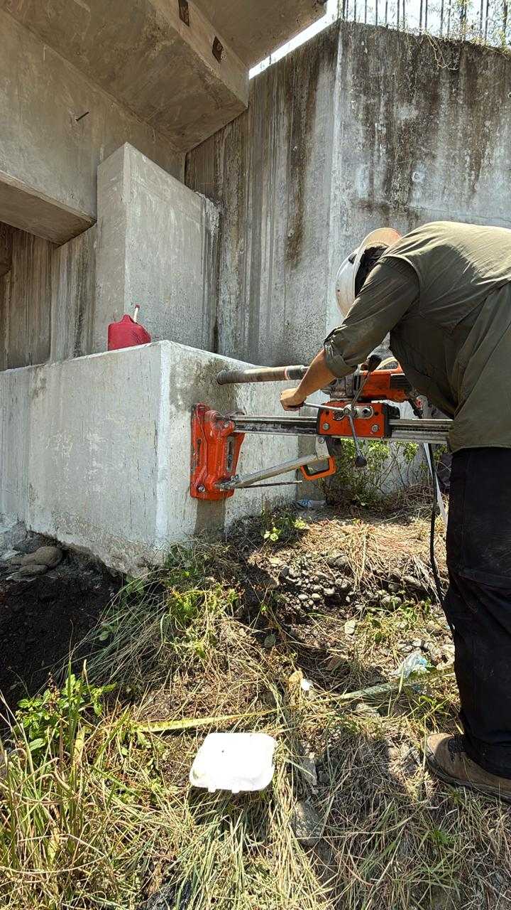

Ensayos de laboratorio y campo ejecutados bajo rigurosas normativas nacionales e internacionales (ASTM, AASHTO, NTG)[cite: 2].
Caracterización física y mecánica de los suelos utilizados en la infraestructura vial y plataformas del país a través de métodos de ensayo normalizados, ejecutados tanto en nuestras instalaciones como en campo.

Importancia en obra: Proporciona los parámetros geotécnicos críticos para el cálculo de cimentaciones, compactación de terracerías y prevención de asentamientos estructurales.
Permite evaluar de forma fehaciente las características de resistencia a la compresión, módulos de ruptura, cargas residuales en vigas, tracción indirecta y módulo de elasticidad del concreto.

Garantía estructural: Certificamos que el concreto colocado en zapatas, columnas, losas y muros cumpla con las resistencias mínimas de diseño (f'c) exigidas en planos.
Caracterización física y mecánica de los agregados finos (arenas) y gruesos (piedrín) a través de métodos de ensayo con base en normativas guatemaltecas e internacionales, orientados a la dosificación de mezclas óptimas.

Control de canteras: Determinamos la calidad granulométrica y porcentaje de absorción para evitar consumo excesivo de cemento y fisuraciones tempranas.

Nuestro equipo técnico se traslada directamente a sus proyectos en cualquier punto de Guatemala con el instrumental calibrado para validar los procesos constructivos en tiempo real:
Medición de asentamiento (Slump), temperatura y peso volumétrico a pie de mixer[cite: 5].
Perfilado estratigráfico visual y extracción de muestras inalteradas para corte directo[cite: 12].
Aprobación inmediata del porcentaje de compactación para liberar el vaciado de siguientes capas[cite: 10].
Exploración a profundidad con trípode para capacidad admisible del terreno.
Envíanos las especificaciones técnicas o cantidades requeridas y elaboraremos una propuesta ajustada a tus tiempos de entrega.